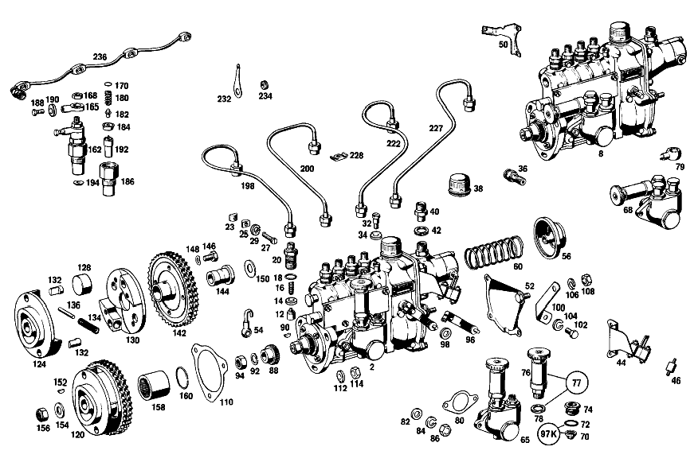

| № | Артикул | Название | Кол. | Примечание | Ограничение |
|---|---|---|---|---|---|
| 2 | A 621 070 39 01 | ТНВД | 1 | [402] БОЛЬШЕ НЕ ПОСТАВЛЯЕТСЯ | |
| 9 | A 000 074 10 29 | - ТОЛКАТЕЛЬ | 4 | [071] TO 621 070 31 01,621 070 39 01 | |
| 10 | A 001 074 07 93 | - ПРУЖИНА | 4 | [402] БОЛЬШЕ НЕ ПОСТАВЛЯЕТСЯ [071] TO 621 070 31 01,621 070 39 01 | |
| 11 | A 000 074 04 49 | - ВТУЛКА РЕГУЛИРУЮЩАЯ | 4 | [070] TO 621 070 25 01,621 070 26 01 [071] TO 621 070 31 01,621 070 39 01 | |
| 11C | A 000 074 55 22 | - ПАРА ПЛУНЖЕРНАЯ | 4 | ||
| 12 | A 000 074 11 15 | - КЛАПАН НАПОРНЫЙ | - | ||
| 12 | A 000 074 75 84 | - Клапан | 4 | ||
| 14 | A 001 997 34 40 | - Уплотнительное кольцо | 4 | ||
| 16 | A 000 074 37 93 | - пружина | 4 | ||
| 18 | A 004 997 79 45 | - Уплотнительное кольцо | - | ||
| 18 | A 017 997 41 48 | - Уплотнительное кольцо | 4 | ||
| 20 | A 000 078 09 69 | - РЕЗЬБ. ШТУЦЕР | 4 | ||
| 23 | A 000 078 14 35 | - зажимной элемент | 2 | ||
| 25 | A 000 078 13 35 | - зажимной элемент | 2 | ||
| 27 | N 000084 006161 | - Винт | 2 | ||
| 29 | N 912004 006102 | - Пружинное кольцо | 2 | ||
| 30 | A 000 074 20 26 | - ТЯГА РЕГУЛЯТОРА | 1 | [070] TO 621 070 25 01,621 070 26 01 [071] TO 621 070 31 01,621 070 39 01 [417] БОЛЬШЕ НЕ ПОСТАВЛЯЕТСЯ, ЗАКАЗЫВАТЬ КОМПЛЕКТ ПОСТАВКИ | |
| 31 | A 000 074 26 50 | - втулка | 1 | [070] TO 621 070 25 01,621 070 26 01 [071] TO 621 070 31 01,621 070 39 01 | |
| 31F | A 000 074 27 50 | - ВТУЛКА | 1 | [070] TO 621 070 25 01,621 070 26 01 [071] TO 621 070 31 01,621 070 39 01 | |
| 32 | A 000 074 17 71 | - болт | 1 | (ШТУЦЕР ПРОКАЧНОЙ) [402] БОЛЬШЕ НЕ ПОСТАВЛЯЕТСЯ | |
| 34 | N 007603 006100 | - Уплотнительное кольцо | 1 | ||
| 36 | A 000 074 72 84 | - Клапан | 1 | ||
| 38 | A 000 075 01 32 | - Фильтр | 1 | ||
| 40 | N 915013 006002 | - Штуцер | 1 | ||
| 42 | N 007603 012405 | - Уплотнительное кольцо | 1 | ||
| 44 | A 621 070 09 40 | - ДЕРЖАТЕЛЬ | 1 | Рулевое управление: Влево | |
| 46 | A 621 302 00 85 | - РЕЗИНОВЫЙ УПОР | 3 | ||
| 52 | A 621 070 01 24 | - ОПОРА ПОДШИПНИКА | 1 | ||
| 54 | A 615 070 00 80 | - Провод | 1 | ||
| 56 | A 000 075 06 07 | - Мембрана | 1 | ||
| 60 | A 000 074 71 93 | ПРУЖИНА | 1 | ||
| 63 | A 000 074 15 59 | - УПЛОТНИТ. КОЛЬЦО | 1 | [070] TO 621 070 25 01,621 070 26 01 [071] TO 621 070 31 01,621 070 39 01 | |
| 65 | A 001 091 53 01 | - Топливный насос | 1 | ||
| 70 | A 000 091 08 10 | - КЛАПАН | - | [402] БОЛЬШЕ НЕ ПОСТАВЛЯЕТСЯ [072] NO LONGER AVAILABLE INDIVIDUALLY, BUT ONLY IN REPAIR KIT 001 586 12 07 | |
| 72 | A 005 997 47 45 | - Уплотнительное кольцо | 2 | ||
| 74 | A 000 074 11 86 | - Резьбовой штуцер | 2 | ||
| 76 | A 001 091 45 01 | - ТОПЛИВНЫЙ | 1 | [402] БОЛЬШЕ НЕ ПОСТАВЛЯЕТСЯ [417] БОЛЬШЕ НЕ ПОСТАВЛЯЕТСЯ, ЗАКАЗЫВАТЬ КОМПЛЕКТ ПОСТАВКИ | |
| 77 | A 000 090 00 50 | - ТОПЛИВНЫЙ | - | ||
| 77 | A 000 090 88 50 | - TS Топливный насос | 1 | (РУЧН. ПОДКАЧ. НАСОС) С УПЛОТНИТ. КОЛЬЦОМ | |
| 78 | A 000 997 36 44 | - Уплотнительное кольцо | - | [072] NO LONGER AVAILABLE INDIVIDUALLY, BUT ONLY IN REPAIR KIT 001 586 12 07 | |
| 80 | A 000 091 17 80 | - Уплотнение | 1 | ||
| 81 | A 000 990 00 05 | - Шпилька | - | ||
| 81 | A 000 990 95 05 | - ШПИЛЬКА | 2 | ||
| 82 | N 000433 006400 | - Шайба | 2 | ||
| 84 | N 912004 006102 | - Пружинное кольцо | 2 | ||
| 86 | N 000934 006007 | - Гайка | 2 | ||
| 86E | A 000 074 31 10 | - РАСПРЕДВАЛ | 1 | [070] TO 621 070 25 01,621 070 26 01 [071] TO 621 070 31 01,621 070 39 01 [417] БОЛЬШЕ НЕ ПОСТАВЛЯЕТСЯ, ЗАКАЗЫВАТЬ КОМПЛЕКТ ПОСТАВКИ | |
| 87 | N 000625 900205 | - Шарикоподшипник | 1 | ПРИВОДН. ОПОРА [402] БОЛЬШЕ НЕ ПОСТАВЛЯЕТСЯ [070] TO 621 070 25 01,621 070 26 01 [071] TO 621 070 31 01,621 070 39 01 | |
| 87E | N 000625 036003 | - Шарикоподшипник | - | ||
| 87E | A 008 981 34 25 | - ШАРИКОПОДШИПНИК | 1 | [071] TO 621 070 31 01,621 070 39 01 | |
| 87K | A 004 997 49 47 | - Уплотнительное кольцо | 1 | [070] TO 621 070 25 01,621 070 26 01 [071] TO 621 070 31 01,621 070 39 01 | |
| 87M | A 000 074 48 52 | - РАСПОРНАЯ ШАЙБА | NB | 0.1 MM [402] БОЛЬШЕ НЕ ПОСТАВЛЯЕТСЯ [070] TO 621 070 25 01,621 070 26 01 [071] TO 621 070 31 01,621 070 39 01 | |
| 88 | A 621 077 00 09 | - Поводок | 1 | ||
| 90 | N 006888 003001 | - Сегментная шпонка | 1 | ||
| 92 | N 000127 012200 | - Пружинное кольцо | 1 | ||
| 94 | N 000934 012021 | - Гайка | 1 | ||
| 96 | A 000 074 37 27 | - РЫЧАГ | 1 | ||
| 97 | A 000 074 83 80 | - Уплотнительная прокладка | 1 | СБОКУ [070] TO 621 070 25 01,621 070 26 01 [071] TO 621 070 31 01,621 070 39 01 | |
| 97E | A 000 074 18 59 | - Уплотнительное кольцо | 1 | ВНИЗУ [070] TO 621 070 25 01,621 070 26 01 [071] TO 621 070 31 01,621 070 39 01 | |
| 97K | A 001 586 12 07 | ремкомплект | 1 | КЛАПАН [402] БОЛЬШЕ НЕ ПОСТАВЛЯЕТСЯ | |
| 98 | A 615 990 02 40 | ШАЙБА | 1 | [402] БОЛЬШЕ НЕ ПОСТАВЛЯЕТСЯ | |
| 100 | A 621 076 04 35 | Кронштейн | 1 | ||
| 102 | N 000933 008145 | Винт | 1 | M8 X 18 | |
| 104 | N 912004 008102 | Пружинное кольцо | 1 | ||
| 106 | N 912004 008102 | Пружинное кольцо | 1 | ||
| 108 | N 000936 008006 | ГАЙКА | 1 | ||
| 110 | A 615 074 00 80 | ПРОКЛАДКА УПЛОТНИТЕЛЬНАЯ | - | ||
| 110 | A 616 074 00 80 | Уплотнение | 1 | ||
| 112 | N 000125 008407 | ШАЙБА | 3 | ||
| 114 | N 304032 008006 | Шестигранная гайка | 3 | M8 | |
| 120 | A 615 070 04 45 | Регулятор угла оп.впрыска | 1 | ||
| 124 | A 621 075 00 25 | ПЛАСТИНА СЕГМЕНТА | 1 | ||
| 128 | A 621 070 00 60 | - ГРУЗ РЕГУЛЯТОРА | 2 | [402] БОЛЬШЕ НЕ ПОСТАВЛЯЕТСЯ [064] TO 621 070 06 45, 621 070 05 45 | |
| 130 | A 621 070 02 57 | - Сегментный фланец | 1 | ||
| 132 | A 615 075 00 74 | - Палец | 4 | ||
| 134 | A 636 993 05 01 | - пружина | 2 | [402] БОЛЬШЕ НЕ ПОСТАВЛЯЕТСЯ | |
| 136 | A 621 075 01 74 | - Палец | 2 | ||
| 142 | A 621 070 02 57 | - Сегментный фланец | 1 | ||
| 144 | A 621 075 04 50 | - втулка | 1 | ||
| 146 | N 000933 008005 | - БОЛТ | 4 | ||
| 148 | N 000137 008200 | - Пружинная шайба | 4 | ||
| 150 | A 127 052 00 53 | Упорное кольцо | 1 | ||
| 152 | N 006888 003001 | Сегментная шпонка | 2 | ||
| 154 | N 000125 013004 | ШАЙБА | 1 | ||
| 156 | N 000985 012000 | ГАЙКА | 1 | ||
| 158 | A 621 077 00 16 | Соединительная втулка | 1 | ||
| 160 | N 009045 032000 | Пруж. стопорное кольцо | 1 | ||
| 162 | A 000 017 55 21 | ФОРСУНКА | 4 | ||
| 165 | A 000 017 06 54 | - СОЕДИНИТЕЛЬ | 4 | ||
| 168 | A 000 017 02 55 | - ГАЙКА | 4 | ||
| 170 | A 000 017 36 52 | - Дистанционная шайба | NB | 1.00 MM | |
| 180 | A 000 017 04 17 | - Винтовая пружина | 4 | ||
| 182 | A 000 017 15 74 | - Палец | 4 | ||
| 184 | A 000 017 01 22 | - Вставка | 4 | ||
| 186 | A 000 017 05 16 | - НАКИДНАЯ ГАЙКА | 4 | ||
| 188 | N 915036 005100 | - Полый болт | 4 | ||
| 190 | N 007603 008109 | - Уплотнительное кольцо | 8 | ||
| 192 | A 000 017 28 12 | - Штифтовая форсунка | 4 | ||
| 194 | A 636 017 01 20 | УПЛОТНИТЕЛЬНАЯ ШАЙБА | - | ||
| 194 | A 617 017 02 60 | Уплотнительное кольцо | - | ||
| 194 | A 617 017 03 60 | уплотнение | - | [414] СТАРУЮ ДЕТАЛЬ УСТАНАВЛИВАТЬ БОЛЬШЕ НЕ РАЗРЕШАЕТСЯ | |
| 194 | A 617 017 00 60 | УПЛОТНИТ. КОЛЬЦО | - | ||
| 194 | A 617 017 03 60 | уплотнение | - | [414] СТАРУЮ ДЕТАЛЬ УСТАНАВЛИВАТЬ БОЛЬШЕ НЕ РАЗРЕШАЕТСЯ | |
| 194 | A 617 017 02 60 | Уплотнительное кольцо | - | ||
| 194 | A 617 017 03 60 | уплотнение | 4 | ||
| 198 | A 615 070 05 33 | ПРОВОД | - | ||
| 198 | A 615 070 19 33 | Провод | 1 | ||
| 200 | A 615 070 06 33 | ПРОВОД | - | ||
| 200 | A 615 070 20 33 | Провод | 1 | ||
| 222 | A 615 070 02 33 | ПРОВОД | - | ||
| 222 | A 615 070 21 33 | Провод | 1 | ||
| 227 | A 615 070 03 33 | ПРОВОД | - | ||
| 227 | A 615 070 22 33 | Провод | 1 | ||
| 228 | A 312 078 02 85 | Трубный кронштейн | 8 | ||
| 236 | A 621 070 00 35 | ПРОВОД | 1 | Коробка передач | |
| 236 | A 621 070 00 35 | ПРОВОД | 1 | Автоматическая коробка переключения передач | |
| 246 | A 001 477 54 01 | Топливный фильтр | 1 | ||
| 248 | A 000 993 06 01 | - ПРУЖИНА | 1 | [402] БОЛЬШЕ НЕ ПОСТАВЛЯЕТСЯ [065] TO 000 477 89 01 | |
| 250 | A 000 477 00 28 | - ОБОЛОЧКА КЛАПАНА | 1 | [402] БОЛЬШЕ НЕ ПОСТАВЛЯЕТСЯ [065] TO 000 477 89 01 | |
| 252 | A 002 993 28 01 | - пружина | 1 | ||
| 254 | A 000 477 01 76 | - Кронштейн уплотнителя | 1 | ||
| 256 | A 000 470 01 92 | - FILTER INSERT | 1 | ОБЪЁМ ПОСТАВКИ [402] БОЛЬШЕ НЕ ПОСТАВЛЯЕТСЯ | |
| 266 | A 100 997 00 40 | - Уплотнение | 1 | ||
| 268 | N 007603 016401 | - Уплотнительное кольцо | 1 | ||
| 270 | A 000 477 08 73 | - гайка | 1 | [402] БОЛЬШЕ НЕ ПОСТАВЛЯЕТСЯ | |
| 272 | A 000 074 17 71 | - болт | 1 | (ШТУЦЕР ПРОКАЧНОЙ) [402] БОЛЬШЕ НЕ ПОСТАВЛЯЕТСЯ | |
| 274 | N 007603 006100 | - Уплотнительное кольцо | 1 | ||
| 276 | A 621 997 02 71 | - ШТУЦЕР | 1 | [034] TO 000 477 87 01, 001 477 27 01 | |
| 278 | N 007603 014100 | - Уплотнительное кольцо | 1 | 14X18\-AL | |
| 280 | N 007604 014106 | - Резьбовая пробка | - | ||
| 280 | N 007604 014110 | - Резьбовая пробка | 1 | ||
| 282 | N 007603 014100 | - Уплотнительное кольцо | 1 | 14X18\-AL | |
| 286 | A 001 477 54 01 | Топливный фильтр | 1 | ||
| 288 | A 002 993 03 01 | - ПРУЖИНА | 1 | [402] БОЛЬШЕ НЕ ПОСТАВЛЯЕТСЯ | |
| 290 | A 000 477 01 76 | - Кронштейн уплотнителя | 1 | ||
| 292 | A 000 092 15 05 | - ЭЛЕМЕНТ ФИЛЬТРУЮЩИЙ | 1 | [402] БОЛЬШЕ НЕ ПОСТАВЛЯЕТСЯ | |
| 294 | A 000 477 35 80 | - Уплотнительное кольцо | 1 | ||
| 296 | A 000 477 31 72 | - БОЛТ | 1 | [402] БОЛЬШЕ НЕ ПОСТАВЛЯЕТСЯ | |
| 298 | N 007603 014100 | - Уплотнительное кольцо | 1 | 14X18\-AL | |
| 300 | A 000 074 17 71 | - болт | 1 | (ШТУЦЕР ПРОКАЧНОЙ) [402] БОЛЬШЕ НЕ ПОСТАВЛЯЕТСЯ | |
| 302 | N 007603 006100 | - Уплотнительное кольцо | 1 | ||
| 306 | A 621 090 02 31 | РАСПРЕДЕЛИТЕЛЬ | 1 | Коробка передач | |
| 306 | A 621 090 02 31 | РАСПРЕДЕЛИТЕЛЬ | 1 | Автоматическая коробка переключения передач | |
| 312 | N 000961 014154 | Винт | 1 | Коробка передач | |
| 312 | N 000961 014154 | Винт | 1 | Автоматическая коробка переключения передач | |
| 313 | N 007603 014100 | Уплотнительное кольцо | 2 | 14X18\-AL Коробка передач | |
| 313 | N 007603 014100 | Уплотнительное кольцо | 2 | 14X18\-AL Автоматическая коробка переключения передач | |
| 315 | A 621 477 00 74 | Стяжной болт | 1 | Коробка передач | |
| 315 | A 621 477 00 74 | Стяжной болт | 1 | Автоматическая коробка переключения передач | |
| 317 | A 621 477 02 22 | ЭЛЕМЕНТ ПРОМЕЖУТОЧНЫЙ | 1 | Коробка передач | |
| 317 | A 621 477 02 22 | ЭЛЕМЕНТ ПРОМЕЖУТОЧНЫЙ | 1 | Автоматическая коробка переключения передач | |
| 322 | A 621 477 01 76 | Тарельчатый диск | 4 | [402] БОЛЬШЕ НЕ ПОСТАВЛЯЕТСЯ | |
| 324 | A 621 477 00 53 | РАСПОРН. ТРУБКА | 2 | ||
| 326 | A 621 477 00 76 | Эластомерная шайба | 4 | ||
| 328 | N 000127 007201 | Пружинное кольцо | 2 | ||
| 330 | N 000934 007001 | Гайка | 2 | ||
| 339 | A 003 997 25 82 | ШЛАНГ | 1 | Коробка передач | |
| 339 | A 003 997 25 82 | ШЛАНГ | 1 | Автоматическая коробка переключения передач | |
| 345 | N 915036 010204 | Полый болт | - | ||
| 345 | N 915036 010108 | Полый болт | 2 | ||
| 347 | N 007603 014104 | Уплотнительное кольцо | 4 | Коробка передач | |
| 347 | N 007603 014104 | Уплотнительное кольцо | 4 | Автоматическая коробка переключения передач | |
| 350 | A 003 997 26 82 | ШЛАНГ | 1 | Коробка передач | |
| 350 | A 003 997 26 82 | ШЛАНГ | 1 | Автоматическая коробка переключения передач | |
| 360 | A 003 997 27 82 | ШЛАНГ | 1 | Коробка передач | |
| 360 | A 003 997 27 82 | ШЛАНГ | 1 | Автоматическая коробка переключения передач | |
| 362 | N 007603 012405 | Уплотнительное кольцо | 2 | ||
| 364 | A 128 476 07 26 | ШЛАНГ | 1 | Коробка передач | |
| 364 | A 128 476 07 26 | ШЛАНГ | 1 | Автоматическая коробка переключения передач | |
| 404 | A 621 070 03 32 | ПРОВОД | 1 | Автоматическая коробка переключения передач | |
| 404 | A 621 070 03 32 | ПРОВОД | 1 | Автоматическая коробка переключения передач | |
| 439 | A 616 070 00 32 | Провод | 1 | ||
| 442 | A 621 990 02 63 | Полый болт | 1 | ||
| 444 | N 007603 012405 | Уплотнительное кольцо | 2 | ||
| 446 | A 187 995 00 37 | хомут | 2 | Коробка передач | |
| 446 | A 187 995 00 37 | хомут | 2 | Автоматическая коробка переключения передач | |
| 455 | A 636 078 00 86 | ВКЛАДКА | NB | ||
| 469 | A 636 071 01 85 | - ДИФФУЗОР | 1 | ||
| 470 | A 621 071 02 47 | ВЕНТИЛЯЦИЯ | 1 | Коробка передач | |
| 470 | A 621 071 02 47 | ВЕНТИЛЯЦИЯ | 1 | Автоматическая коробка переключения передач | |
| 477 | A 615 071 00 11 | - Дроссельная заслонка | 1 | ||
| 480 | A 615 071 02 10 | - ДРОССЕЛЬНАЯ ЗАСЛОНКА | 1 | [402] БОЛЬШЕ НЕ ПОСТАВЛЯЕТСЯ | |
| 482 | N 900055 008002 | - Пружинная шайба | NB | ||
| 485 | A 615 070 03 29 | - ВАЛ | 1 | ||
| 487 | A 621 071 07 10 | - ДРОССЕЛЬНАЯ ЗАСЛОНКА | 1 | [402] БОЛЬШЕ НЕ ПОСТАВЛЯЕТСЯ | |
| 490 | N 000964 004008 | - Винт | - | ||
| 490 | N 000966 004005 | - Винт | 4 | ||
| 492 | A 000 071 01 12 | - ПОДШИПНИК ОПОРНЫЙ | 1 | ||
| 493 | N 000084 005132 | - Винт | 1 | ||
| 494 | N 000934 005008 | - Гайка | 1 | M5 | |
| 495 | N 000084 005132 | - Винт | 1 | ||
| 496 | N 000934 005008 | - Гайка | 1 | M5 | |
| 498 | A 621 070 17 21 | - РЫЧАГ | - | [050] NO LONGER AVAILABLE INDIVIDUALLY | |
| 502 | A 615 070 00 21 | - Рычаг | - | [050] NO LONGER AVAILABLE INDIVIDUALLY | |
| 506 | A 000 994 13 10 | - предохранитель | 2 | ||
| 508 | N 000936 008012 | - Гайка | 2 | ||
| 512 | N 000125 008418 | - Шайба | - | ||
| 512 | N 000125 008443 | - Шайба | 2 | 8 MM | |
| 514 | A 621 993 03 01 | - пружина | 1 | ||
| 516 | N 000471 008002 | - Стопорное кольцо | 1 | ||
| 520 | A 615 070 01 21 | - РЫЧАГ | - | ||
| 520 | A 615 070 03 29 | - ВАЛ | - | [050] NO LONGER AVAILABLE INDIVIDUALLY | |
| 522 | A 621 071 01 91 | - МАНЖЕТА | 1 | [402] БОЛЬШЕ НЕ ПОСТАВЛЯЕТСЯ | |
| 524 | A 000 994 13 10 | предохранитель | 1 | ||
| 526 | N 000936 008012 | - Гайка | 1 | ||
| 529 | A 615 070 14 21 | Рычаг | 1 | ||
| 532 | A 621 993 02 10 | ПРУЖИНА | 1 | [402] БОЛЬШЕ НЕ ПОСТАВЛЯЕТСЯ | |
| 534 | A 636 074 02 80 | уплотнение | 1 | ||
| 536 | N 000125 006407 | ШАЙБА | 4 | ||
| 538 | N 000934 006007 | Гайка | 4 | ||
| 552 | A 621 070 11 40 | ДЕРЖАТЕЛЬ | 1 | ||
| 554 | A 186 305 01 15 | болт | 1 | ||
| 556 | N 000934 006007 | Гайка | 1 | ||
| 558 | N 000127 008203 | Пружинное кольцо | 2 | ||
| 560 | N 000934 008010 | Гайка | - | ||
| 560 | N 304032 008006 | Шестигранная гайка | 2 | M8 | |
| 562 | A 621 070 19 22 | РЫЧАГ | 1 | ||
| 573 | N 006799 007007 | Стопорная шайба | 2 | ||
| 577 | A 621 070 10 75 | ТЯГА | 1 | ||
| 590 | A 615 997 04 82 | ШЛАНГ | 1 | 50 MM [402] БОЛЬШЕ НЕ ПОСТАВЛЯЕТСЯ | |
| 595 | N 000934 005008 | Гайка | 4 | M5 | |
| 597 | A 000 991 16 22 | Шаровой подпятник | - | ||
| 597 | A 000 991 89 22 | ПОДПЯТНИК ШАРОВОЙ | 4 | ||
| 600 | A 621 070 05 24 | ОПОРА ПОДШИПНИКА | 1 | ||
| 603 | N 000127 008203 | Пружинное кольцо | 1 | ||
| 604 | N 304032 008006 | Шестигранная гайка | 1 | M8 | |
| 605 | N 000933 006102 | Винт | 2 | ||
| 609 | A 615 070 06 22 | РЫЧАГ | 1 | Рулевое управление: ВлевоКоробка передач | |
| 613 | A 621 070 16 22 | РЫЧАГ | 1 | Рулевое управление: ВлевоАвтоматическая коробка переключения передач | |
| 615 | A 180 072 03 50 | - ВТУЛКА | 1 | Автоматическая коробка переключения передач | |
| 617 | N 006799 007007 | Стопорная шайба | 1 | ||
| 619 | A 110 991 00 15 | ЦАПФА СФЕРИЧЕСКАЯ | 1 | Автоматическая коробка переключения передач | |
| 621 | A 120 990 22 40 | ШАЙБА | 1 | Автоматическая коробка переключения передач | |
| 623 | N 000127 005203 | Пружинное кольцо | 1 | Автоматическая коробка переключения передач | |
| 625 | N 000934 005008 | Гайка | 1 | M5 Автоматическая коробка переключения передач | |
| 627 | A 621 070 16 75 | ТЯГА | 1 | Автоматическая коробка переключения передач | |
| 630 | N 900331 005048 | Тяга | 1 | Коробка передач | |
| 632 | N 000934 005008 | Гайка | 2 | M5 Коробка передач | |
| 632 | N 000934 005008 | Гайка | 1 | M5 Автоматическая коробка переключения передач | |
| 635 | A 000 991 16 22 | Шаровой подпятник | - | ||
| 635 | A 000 991 89 22 | ПОДПЯТНИК ШАРОВОЙ | 2 | ||
| A 621 070 24 01 | ТНВД | - | Рулевое управление: Вправо | ||
| A 621 070 25 01 | ТНВД | 1 | Рулевое управление: Влево | ||
| A 621 070 26 01 | ТНВД | 1 | Рулевое управление: Вправо | ||
| A 000 074 12 29 | - ТОЛКАТЕЛЬ | 4 | [070] TO 621 070 25 01,621 070 26 01 | ||
| A 001 074 09 93 | - ПРУЖИНА | 4 | [070] TO 621 070 25 01,621 070 26 01 | ||
| A 000 078 09 35 | - ЗАЖИМ | - | |||
| A 000 078 08 35 | - ЗАЖИМ | - | |||
| A 000 078 03 35 | - ЗАЖИМ | - | |||
| A 000 078 02 35 | - ЗАЖИМ | - | |||
| A 621 070 12 40 | - ДЕРЖАТЕЛЬ | 1 | Рулевое управление: Вправо | ||
| N 000127 005203 | - Пружинное кольцо | 6 | |||
| N 000934 005008 | - Гайка | 6 | M5 | ||
| A 000 075 00 04 | - КРЫШКА | 1 | |||
| A 000 074 08 80 | - ПРОКЛАДКА УПЛОТНИТЕЛЬНАЯ | - | |||
| A 001 074 23 80 | - ПРОКЛАДКА УПЛОТНИТЕЛЬНАЯ | 1 | |||
| A 000 077 03 52 | - Компенсационное кольцо | NB | 0.5mm | ||
| A 000 077 04 52 | - РАСПОРНАЯ ШАЙБА | NB | 1.0 MM | ||
| A 000 077 05 52 | - РАСПОРНАЯ ШАЙБА | NB | 2.0 MM | ||
| A 003 981 20 25 | - ШАРИКОПОДШИПНИК | 1 | [402] БОЛЬШЕ НЕ ПОСТАВЛЯЕТСЯ [070] TO 621 070 25 01,621 070 26 01 | ||
| A 000 074 49 52 | - РАСПОРНАЯ ШАЙБА | NB | 0.15 MM [070] TO 621 070 25 01,621 070 26 01 [071] TO 621 070 31 01,621 070 39 01 | ||
| A 000 074 36 52 | - Дистанционная шайба | NB | 0.3 MM [402] БОЛЬШЕ НЕ ПОСТАВЛЯЕТСЯ [070] TO 621 070 25 01,621 070 26 01 | ||
| A 000 074 37 52 | - Дистанционная шайба | NB | 0.5mm [402] БОЛЬШЕ НЕ ПОСТАВЛЯЕТСЯ [070] TO 621 070 25 01,621 070 26 01 [071] TO 621 070 31 01,621 070 39 01 | ||
| N 000094 001502 | ШПЛИНТ | 1 | |||
| A 615 070 00 45 | МЕХ-М РЕГ. ОПЕР. ВПРЫСКА | - | |||
| A 621 993 05 01 | - ПРУЖИНА | 2 | [402] БОЛЬШЕ НЕ ПОСТАВЛЯЕТСЯ [064] TO 621 070 06 45, 621 070 05 45 | ||
| A 000 017 31 21 | - ФОРСУНКА | 4 | |||
| A 000 017 37 52 | - Дистанционная шайба | NB | 1.05 MM | ||
| A 000 017 38 52 | - Дистанционная шайба | NB | 1.10 MM | ||
| A 000 017 39 52 | - Дистанционная шайба | NB | 1.15 MM | ||
| A 000 017 40 52 | - Дистанционная шайба | NB | 1.20 MM | ||
| A 000 017 41 52 | - Дистанционная шайба | NB | 1.25 MM | ||
| A 000 017 42 52 | - Дистанционная шайба | - | |||
| A 003 017 74 52 | - Дистанционная шайба | NB | 1.30 MM [402] БОЛЬШЕ НЕ ПОСТАВЛЯЕТСЯ | ||
| A 000 017 43 52 | - Дистанционная шайба | NB | 1.35 MM | ||
| A 000 017 44 52 | - Дистанционная шайба | NB | 1.40 MM | ||
| A 000 017 45 52 | - Дистанционная шайба | NB | 1.45 MM | ||
| A 000 017 46 52 | - Дистанционная шайба | NB | 1.50 MM | ||
| A 000 017 47 52 | - Дистанционная шайба | NB | 1.55 MM | ||
| A 000 017 48 52 | - Дистанционная шайба | NB | 1.60 MM | ||
| A 000 017 49 52 | - Дистанционная шайба | NB | 1.65 MM | ||
| A 000 017 50 52 | - Дистанционная шайба | NB | 1.70 MM | ||
| A 000 017 51 52 | - Дистанционная шайба | NB | 1.75 MM | ||
| A 000 017 52 52 | - Дистанционная шайба | NB | 1.80 MM | ||
| A 000 017 53 52 | - Дистанционная шайба | NB | 1.85 MM | ||
| A 000 017 54 52 | - Дистанционная шайба | NB | 1.90 MM | ||
| A 000 017 55 52 | - Дистанционная шайба | NB | 1.95 MM | ||
| A 000 017 69 12 | Штифтовая форсунка | 4 | [011] FOR ENGINES WITH EXCESSIVE DIESEL KNOCKS | ||
| A 621 070 04 33 | ПРОВОД | - | |||
| A 615 070 00 33 | ПРОВОД | - | |||
| A 621 070 08 33 | ПРОВОД | 1 | [011] FOR ENGINES WITH EXCESSIVE DIESEL KNOCKS | ||
| A 621 070 05 33 | ПРОВОД | - | |||
| A 615 070 01 33 | ПРОВОД | - | |||
| A 621 070 09 33 | ПРОВОД | 1 | [011] FOR ENGINES WITH EXCESSIVE DIESEL KNOCKS | ||
| A 621 070 10 33 | ПРОВОД | 1 | [011] FOR ENGINES WITH EXCESSIVE DIESEL KNOCKS | ||
| A 621 070 11 33 | ПРОВОД | 1 | [011] FOR ENGINES WITH EXCESSIVE DIESEL KNOCKS | ||
| N 000931 005014 | БОЛТ | 4 | |||
| N 000127 005203 | Пружинное кольцо | 4 | |||
| N 000934 005008 | Гайка | 4 | M5 | ||
| A 615 070 07 32 | ПРОВОД | 1 | Коробка передач | ||
| A 615 070 07 32 | ПРОВОД | 1 | Автоматическая коробка переключения передач | ||
| A 000 477 87 01 | ФИЛЬТР ТОПЛ. | - | |||
| A 001 477 27 01 | ФИЛЬТР ТОПЛ. | - | |||
| A 000 477 15 80 | - Уплотнение | 1 | [065] TO 000 477 89 01 | ||
| A 000 477 11 72 | - ГАЙКА | 1 | [065] TO 000 477 89 01 | ||
| N 007603 014104 | - Уплотнительное кольцо | 1 | [065] TO 000 477 89 01 | ||
| A 000 477 13 72 | - БОЛТ | 1 | [402] БОЛЬШЕ НЕ ПОСТАВЛЯЕТСЯ [065] TO 000 477 89 01 | ||
| N 007603 010106 | - Уплотнительное кольцо | 1 | [065] TO 000 477 89 01 | ||
| A 621 997 01 71 | - ШТУЦЕР | 1 | [065] TO 000 477 89 01 | ||
| N 007603 018101 | - Уплотнительное кольцо | 1 | A18X22\-CU [065] TO 000 477 89 01 | ||
| N 007604 014106 | - Резьбовая пробка | - | |||
| N 007604 014110 | - Резьбовая пробка | 1 | [065] TO 000 477 89 01 | ||
| N 007603 014100 | - Уплотнительное кольцо | 1 | 14X18\-AL [065] TO 000 477 89 01 | ||
| A 000 470 00 90 | ФИЛЬТР ТОПЛ. | - | |||
| A 621 997 02 71 | - ШТУЦЕР | 1 | |||
| N 007603 014100 | - Уплотнительное кольцо | 1 | 14X18\-AL | ||
| N 007604 014106 | - Резьбовая пробка | - | |||
| N 007604 014110 | - Резьбовая пробка | 1 | |||
| N 007603 014100 | - Уплотнительное кольцо | 1 | 14X18\-AL | ||
| A 621 477 03 22 | ВКЛАДКА | 1 | Коробка передач [402] БОЛЬШЕ НЕ ПОСТАВЛЯЕТСЯ | ||
| A 621 477 03 22 | ВКЛАДКА | 1 | Автоматическая коробка переключения передач [402] БОЛЬШЕ НЕ ПОСТАВЛЯЕТСЯ | ||
| A 615 092 01 40 | ДЕРЖАТЕЛЬ | 1 | Коробка передач | ||
| A 615 092 01 40 | ДЕРЖАТЕЛЬ | 1 | Автоматическая коробка переключения передач | ||
| N 000931 007020 | Винт | 1 | Коробка передач | ||
| N 000931 007020 | Винт | 1 | Автоматическая коробка переключения передач | ||
| N 000125 007408 | Шайба | 1 | Коробка передач | ||
| N 000125 007408 | Шайба | 1 | Автоматическая коробка переключения передач | ||
| N 000931 012161 | БОЛТ | 1 | Коробка передач | ||
| N 000931 012161 | БОЛТ | 1 | Автоматическая коробка переключения передач | ||
| N 000137 012203 | Пружинная шайба | 1 | Коробка передач | ||
| N 000137 012203 | Пружинная шайба | 1 | Автоматическая коробка переключения передач | ||
| A 617 070 00 35 | Топливопровод | 1 | Коробка передач | ||
| A 617 070 00 35 | Топливопровод | 1 | Автоматическая коробка переключения передач | ||
| N 007603 014100 | Уплотнительное кольцо | 4 | 14X18\-AL Коробка передач | ||
| N 007603 014100 | Уплотнительное кольцо | 4 | 14X18\-AL Автоматическая коробка переключения передач | ||
| A 615 070 04 32 | Провод | 1 | Коробка передач | ||
| A 615 070 04 32 | Провод | 1 | Автоматическая коробка переключения передач | ||
| N 915036 010108 | Полый болт | 2 | Коробка передач | ||
| N 915036 010108 | Полый болт | 2 | Автоматическая коробка переключения передач | ||
| N 915006 006003 | ШТУЦЕР ДВОЙНОЙ | 2 | Коробка передач | ||
| N 915006 006003 | ШТУЦЕР ДВОЙНОЙ | 2 | Автоматическая коробка переключения передач | ||
| N 007603 014104 | Уплотнительное кольцо | 4 | Коробка передач | ||
| N 007603 014104 | Уплотнительное кольцо | 4 | Автоматическая коробка переключения передач | ||
| N 007603 014100 | Уплотнительное кольцо | 4 | 14X18\-AL Коробка передач | ||
| N 007603 014100 | Уплотнительное кольцо | 4 | 14X18\-AL Автоматическая коробка переключения передач | ||
| N 900269 012004 | ХОМУТ | 1 | Коробка передач | ||
| N 900269 012004 | ХОМУТ | 1 | Автоматическая коробка переключения передач | ||
| N 007604 014106 | Резьбовая пробка | - | Коробка передач | ||
| N 007604 014110 | Резьбовая пробка | 1 | Коробка передач | ||
| N 007604 014110 | Резьбовая пробка | 1 | Автоматическая коробка переключения передач | ||
| N 007603 014100 | Уплотнительное кольцо | 1 | 14X18\-AL Коробка передач | ||
| N 007603 014100 | Уплотнительное кольцо | 1 | 14X18\-AL Автоматическая коробка переключения передач | ||
| A 615 990 02 63 | Полый болт | 1 | Коробка передач | ||
| A 615 990 02 63 | Полый болт | 1 | Автоматическая коробка переключения передач | ||
| N 007603 014100 | Уплотнительное кольцо | 2 | 14X18\-AL Коробка передач | ||
| N 007603 014100 | Уплотнительное кольцо | 2 | 14X18\-AL Автоматическая коробка переключения передач | ||
| A 615 070 01 32 | ПРОВОД | 1 | Коробка передач | ||
| A 615 070 01 32 | ПРОВОД | 1 | Автоматическая коробка переключения передач | ||
| A 494 987 00 43 | РЕЗИНОВАЯ ВТУЛКА | 2 | Коробка передач [402] БОЛЬШЕ НЕ ПОСТАВЛЯЕТСЯ | ||
| A 494 987 00 43 | РЕЗИНОВАЯ ВТУЛКА | 2 | Автоматическая коробка переключения передач [402] БОЛЬШЕ НЕ ПОСТАВЛЯЕТСЯ | ||
| N 000084 006134 | Винт | 2 | Коробка передач | ||
| N 000084 006134 | Винт | 2 | Автоматическая коробка переключения передач | ||
| N 000137 006204 | Пружинная шайба | 2 | Коробка передач | ||
| N 000137 006204 | Пружинная шайба | 2 | Автоматическая коробка переключения передач | ||
| A 621 070 25 28 | РЕГУЛЯТОР ЗАСЛОНКИ | - | |||
| A 621 070 29 28 | РЕГУЛЯТОР ЗАСЛОНКИ | - | |||
| A 615 070 21 28 | РЕГУЛЯТОР ЗАСЛОНКИ | 1 | [402] БОЛЬШЕ НЕ ПОСТАВЛЯЕТСЯ | ||
| A 621 071 01 47 | ВЕНТИЛЯЦИЯ | 1 | Коробка передач [402] БОЛЬШЕ НЕ ПОСТАВЛЯЕТСЯ | ||
| A 621 071 01 47 | ВЕНТИЛЯЦИЯ | 1 | Автоматическая коробка переключения передач [402] БОЛЬШЕ НЕ ПОСТАВЛЯЕТСЯ | ||
| A 136 071 00 12 | - ПОДШИПНИК ОПОРНЫЙ | 1 | |||
| A 621 070 18 21 | - РЫЧАГ | - | |||
| A 621 070 23 21 | - РЫЧАГ | - | |||
| N 071805 008300 | - Пруж. стопорное кольцо | 4 | |||
| A 621 070 20 22 | РЫЧАГ | - | |||
| A 621 070 08 22 | РЫЧАГ | 1 | Рулевое управление: ВправоКоробка передач | ||
| A 621 070 18 22 | РЫЧАГ | 1 | Рулевое управление: ВправоАвтоматическая коробка переключения передач | ||
| N 900331 005068 | Тяга | 1 | Автоматическая коробка переключения передач | ||
| N 071805 008300 | - Пруж. стопорное кольцо | 2 |
Позиций: 378 · подписано на схемах: 241 · колесо — плавный зум в курсор, перетаскивание — пан, двойной клик — зум, клик по артикулу — скопировать.